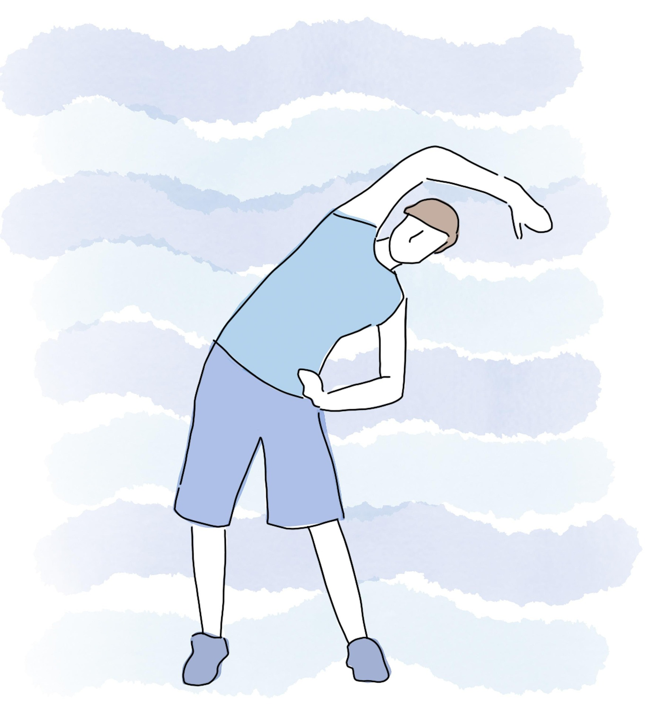

Fitness tracking is the practice of monitoring physical activities, health metrics, and overall wellness using digital tools and wearable devices. It allows individuals to measure daily activity, calorie intake, and progress toward fitness goals. With the rise of smartphones and smartwatches, fitness tracking has become accessible and widely popular among people of all ages. Many professionals recommend fitness tracking to maintain a consistent exercise routine and prevent sedentary lifestyles.
Modern fitness tracking platforms provide a comprehensive approach to health. Users can record workouts, monitor heart rate, track sleep patterns, and manage diet plans. These platforms also provide guided exercise programs for beginners and advanced users, making it easier for anyone to adopt a healthier lifestyle. Integration with mobile apps enables real-time feedback, progress charts, and goal reminders.
Fitness tracking is not limited to exercise alone; it includes nutrition management and lifestyle monitoring. Tracking calorie consumption, macronutrients, and hydration levels helps individuals make informed dietary decisions. Combined with physical activity logs, this holistic tracking improves overall wellness. Health-conscious users can prevent lifestyle-related diseases and maintain a balanced life by regularly reviewing their fitness data.
The social aspect of fitness tracking has gained attention as well. Many apps and devices allow users to share progress, compete with friends, and join community challenges. This feature motivates individuals to stay consistent and enhances accountability. Gamification elements, such as rewards, badges, and leaderboards, further encourage long-term engagement with fitness routines.
Advancements in technology continue to expand the capabilities of fitness tracking. Wearable sensors now measure heart rate variability, blood oxygen levels, and even stress indicators. Artificial intelligence helps personalize fitness plans based on user data. With consistent tracking and insights, individuals can achieve their health goals more efficiently while maintaining safety and reducing the risk of injuries. Fitness tracking is now considered an essential part of modern health management and lifestyle improvement.

